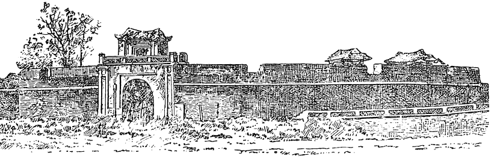

THÀNH SƠN-TÂY
Quí Ly cho đạo sĩ Nguyễn Khánh vào cung thuyết vua Thuận Tông đi tu tiên. Vua nghe theo, nhường ngôi cho Thái tử Án, ban chiếu vào tháng ba năm Mậu dần (I398), cử Phụ chính thái sư Hồ Quí Ly lấy địa vị Quốc tổ nhiếp chánh.
Thái tử Án mới lên ba tuổi.
Tháng tư năm sau, Quí Ly sai nội tẩm học sinh là Nguyễn Cẩn cùng Xạ kỵ tướng quân Phạm Khả Vĩnh giết Thuận Tông.
Họ Trần ở ngôi được I75 năm ; truyền I2 đời vua.
Năm sau, tháng 2 năm Canh thìn (Kiến Tân thứ ba – I400), Thiếu đế Án bị giáng xuống làm Bảo Ninh đại vương. Quí Ly không giết vì Án là cháu ngoại.
Trước khi lên ngôi, Quí Ly đã dàn xếp vài hình thức để tránh tiếng tăm:
- Thiếu Đế tự ý nhường ngôi.
- Triều thần 3 lần dâng biểu xin tấn tôn.
Quí Ly lên ngôi lấy hiệu là Thành Nguyên, đặt quốc hiệu là Đại Ngu. Cuối năm ấy, Quí Ly nhường ngôi cho Hồ Hán Thương rồi lên làm Thượng hoàng như các vua nhà Trần thuở trước.
Vừa lên ngôi, Quí Ly cử Đỗ Mãn mang thủy quân, Trần Tùng mang lục quân, tất cả I5 vạn sang đánh Chiêm thành nhân dịp vua Chiêm là La Khải mới mất, con là Ba-Đích-Lại lên nối ngôi. Nhưng hai cánh quân tiến không đúng nhịp nên không tiếp ứng được nhau. Lục quân thiếu lương phải rút lui. Thế là cuộc viễn chinh bất thành.
Sau khi thoát khỏi cuộc mưu sát tại HỘI THỀ ĐỐN SƠN, Quí Ly dẹp yên các phe đối lập rồi cuối năm thì nhường ngôi cho Hán Thương.
Việc cấp bách nhứt của Quí Ly là vấn đề ngoại giao với Trung quốc, vì biết thế nào nhà Minh cũng lấy cớ nhà Trần bị ông lật đổ để sang đánh. Ông cho sứ qua Tàu nói với nhà Minh rằng con cháu họ Trần không còn ai nữa, xin cho Hán Thương lấy danh nghĩa là cháu ngoại thay thế.
Năm quí mùi tức năm Khai Đại nguyên niên (I403), nhân Minh Thành Tổ lên ngôi, Hán Thương sai sứ sang mừng và xin tấn phong. Thành Tổ cho Dương Bột sang nước ta điều tra, Quí Ly cho các quan viên phụ lão làm tờ khai đúng như sứ giả đã nói với vua Tàu. Thành Tổ không lý do từ chối, phải phong cho Hán Thương là An-nam Quốc-vương.
Tạm yên về phía Bắc triều, Quí Ly quay sang đối phó với Chiêm Thành.
Năm Nhâm Ngọ (I402), Đỗ Mãn đem binh đánh Chiêm. Chiêm vương là Ba Đích Lại sai cậu là Bồ Điền sang dâng đất Chiêm Động (phủ Thăng bình, tỉnh Quảng nam) để xin bãi binh. Quí Ly đòi thêm đất Cỗ Lũy (Quảng Ngãi) rồi đặt ra lộ Thang Hoa để thi hành việc di dân về phía Nam.
Năm sau (Quí Mùi), Đỗ Mãn lại đem 20 vạn binh đánh Chiêm lần nữa để yêu sách những đất Bạt đạt Gia, Hắc Bạch và Sa ly nha về phía Nam đất Chiêm Động và Cỗ Lũy. Quân Chiêm giữ vững thành Chà Bàn. Quân nhà Hồ cạn lương phải rút về.
Năm sau (Giáp thân – I404), sứ Minh sang trách về vụ Chiêm Thành khiếu nại về việc binh đội Việt Nam chiếm đất đai.
Cũng năm ấy, gia nô của Trần Nguyên Huy đổi tên là Trần Thiêm Bình trốn sang nước Lão Qua rồi qua Vân Nam, lên Yên Kinh trá xưng là con vua Nghệ Tông, tố cáo việc cướp ngôi của họ Hồ, và xin nhà Minh đem binh qua Nam. Minh Thành Tổ phái ngự sử Lý Kỷ sang dò xét. Quí Ly biết tin, cho người đuổi theo định bắt giết sứ bộ, nhưng sau khi tìm hiểu sự thật được rồi, Lý Kỷ âm thầm vượt biên.
Tháng hai năm Ất dậu, Khai Đại thứ ba (I405), nhà Minh sai sứ sang đòi đất Lộc Châu, bảo rằng đó là lãnh thổ cũ của Tàu. Trước đó, họ đã đòi một lần, Quí Ly không chịu, nhưng lần nầy, nhà Minh đã vững vàng và đang tìm cớ đánh nước ta, tình thế rất găng. Ông đành cho Hoàng Hội Khanh cắt đất nhường cho nhà Minh để êm chuyện. Hội Khanh cắt đất Cỗ Lâu tất cả 59 thôn.
Năm tháng sau, nhà Minh cho bọn hoạn giả Việt Nam Nguyễn Toán, Nguyễn Đạo, Từ Cá, Ngô Tín là những đầu bếp giỏi mà Nghệ Tông đã cống cho Minh Thái Tổ về nước dò xét tình hình.
Tháng 9, sứ bộ nhà Hồ lại đem cống phẩm sang Bắc triều để xem thái độ Minh Thành Tổ: sứ giả Phạm Canh là Tả tư Lang Trung bị Minh giữ lại, chỉ cho thông phán Lưu Quang Định trở về. Biết không thể tránh khỏi chiến tranh, Hán Thương cấp tốc triệu tập các quan An phủ sứ các Lộ về kinh hợp bàn đối phó. Tả tướng quốc Hồ nguyên Trừng (anh Hán Thương) nói: « Tôi không sợ đánh, chỉ sợ dân không theo thôi! »
Lời này trúng ý Quí Ly, Nguyên Trừng được thưởng cái hộp vàng.
Từ lúc làm quan, Quí Ly đã lo cải cách quân sự, và khi lên ngôi, thì càng tích cực tổ chức việc quốc phòng. Đông Đô (Thăng Long) được phòng thủ cẩn mật. Trước khi hội với nội ngoại bá quan văn võ, Quí Ly đã sai đắp thành Đa Bang, thuộc xã Cỗ pháp, huyện Tiên phong, tỉnh Sơn tây ; lấy gỗ đóng cọc ở khúc sông Bạch hạc thuộc Việt Trì, Hưng Hóa để chận thủy quân nhà Minh. Về phía Nam ngạn sông Nhị Hà có cằm cừ dài hơn 700 dặm. Về mặt bộ, các vệ chia nhau đóng quân ở những nơi hiểm yếu. Dân các lộ Bắc Giang, Tam đái được lịnh dựng sẵn nhà cửa ở những nơi đất hoang trên Nam ngạn sông Cái để có nơi tản cư dân chúng. Những nhà có phẩm tước được lịnh chiêu mộ những kẻ đào vong lập thành các đội quân do các chức Thiên hộ, Bá hộ điều khiển hầu phụ lực với đại quân của triều đình.